Dyalog @ 25
How we got here
Vector 23:4.1, page 3
It all seems so long ago now. But only 30 years ago you could walk into any office in the country without seeing a single personal computer. No screens, no keyboards; no laptops, no printers. They simply didn’t exist.
On your desktop: a phone, in- and out-trays, a stapler, a pencil and a small dish of paperclips. Perhaps a desk calculator. Somewhere nearby, the sound of an IBM Selectric typewriter.
No one sent email. There were no web sites to consult. No word processors on which to write memos or press releases; typists worked from dictation tapes, shorthand notes or longhand drafts.
And for managers, immersed in a world of sales and expenses, budget and actual, no spreadsheets. Just paper, pencils and erasers.
Keyboards were the province of typists, and typists were clerical workers. Managers could not type, and would not wish to be seen typing even if they could type.
A computer needed its own room, with false floors and ceilings for its cables, and dedicated air conditioning and fire-control systems. A computer was as delicate as an auto-immune disease patient sealed in a bubble, and almost as precious. Programs arrived on cards and tapes, the results were stamped on special green-striped paper by rattling line printers and carried away in boxes.
Personal computing began before personal computers. Such was the hunger. Managers whose budgets could stand the substantial fees had teletype computer terminals installed. The time-sharing mainframes they connected to ran programs for financial planning and management, budgeting, scientific analyses – a wide range of software applications.
Some managers even started to use the keyboard themselves.
Time-sharing services were barely personal computing. You could use the installed software, often flexible and powerful for its purpose. But if you wanted anything it didn’t do, you needed a programmer. Time-sharing services stayed busy customising their packages to the needs of new customers.
A manager who wanted computer help in thinking through numerical scenarios needed help from a programmer – or he needed to become one. Personal computing was available before personal computers: if you had a time-sharing service and could write your own programs. FORTRAN was widely available for programming and BASIC was popular. But APL was something else.
APL was an accelerator for personal computing, because it demanded much less from the programmer. Relative to its rivals, it required less attention to how numbers and characters got shuffled around, and left more attention free to focus on the core problem logic. Domain experts could get useful programs from a reasonable investment of time; professional APL programmers could work faster than in other languages.
In the mid- to late-70s programming was the scarce resource in the time-sharing business. There seemed no limit to how much expensive connect time could be sold if customers could only get the software they needed. For time-sharing bureaus such as I.P. Sharp Associates and Atkins, APL accelerated the sale of connect time.
Writing custom software could be profitable, but bureaus would often discount or waive the one-time consulting fees to secure the recurring time-sharing revenue. Rapid development in APL saved (often unbillable) programming time and brought forward the time-sharing cash flows. Better, customers who learned the language then generated time-sharing revenues as they wrote their own programs.
The bureaus loved APL: it cut costs and accelerated sales. The customers loved APL: they could see results faster, and some of them could work the controls themselves. It was huge fun to be an APL programmer, working this magic. We were the genial wizards of the new technology. It seemed too good to last.
Then, apparently, Bill Gates decided the APL he contemplated was not commercially viable.
It was. PCs changed the economics of the business.
Many of these cash-cow time-sharing applications were quite modest, and migrated promptly even to the first, primitive PCs. Even the simple early spreadsheet VisiCalc was a better environment for unskilled users and simple tasks than APL. And because spreadsheets handled the simple back-of-an-envelope applications so smoothly, and PCs were a modest capital cost, customers took the time to work out how to move their more complex applications as well. At one London computer show, a place where people usually came to look and poke, a line formed at the Apple booth. Visitors queued to hand over £100 each for a copy of VisiCalc and another £1,000 for an Apple II on which to run it. The time-sharing revenues started to dry up.
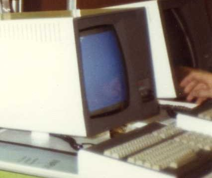
This was where Dyadic Systems Ltd found itself in 1981. IBM produced its first PC, the 5150 in August that year, seen by business IT as legitimising what many had supposed an unreliable, maverick technology. It would be another year before Scientific Time Sharing Corporation produced STSC APL*Plus/PC, and half a decade before it released STSC APL*Plus/386, the environment to which many mainframe APL applications migrated.
Dyadic Systems¶
Dyadic Systems had been formed in 1976 by a breakaway group of APL consultants from Atkins Computing, a time-sharing bureau: David Crossley, Phil Goacher, Ted Hare, John Stembridge, and Geoff Streeter. They were joined shortly afterwards by Pauline Brand.
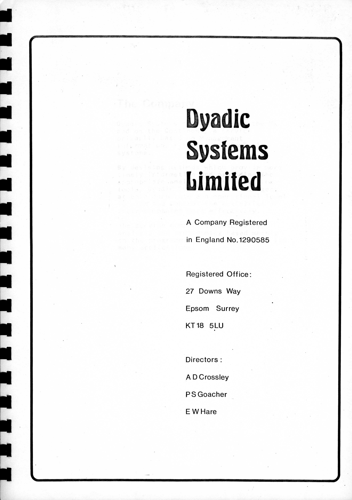
They had all been involved in a new APL department for Atkins within the administrative fief of Phil Goacher. Ted Hare headed the sales team, with special responsibility for APL growth. Crossley’s background in operational research had evolved into broader software development, mostly in FORTRAN. He had come across I.P. Sharp’s APL in 1970 while working for Bell Northern Research, the research arm of Bell Canada. He was inspired with an instant and life-long enthusiasm for the language. In 1973 this knowledge had qualified him as sufficiently expert to head the new APL department at Atkins – he had, after all, read the book. John Stembridge was a founding member of that group. Pauline Brand was an early recruit, and Geoff Streeter transferred to the department early on.
Two other notable people from that environment were destined to play major roles in this story. John Scholes was a ‘back room’ developer in systems support, who provided regular enhancements to the Sigma APL processor, and Peter Donnelly was a client with W.H. Smith.
The APL department at Atkins had grown rapidly. Its main competition came from I.P. Sharp Associates, but it was a growth market, with plenty of work to go round.
[David Crossley] The Seventies proved the golden age for time-sharing services. APL fitted naturally into this delivery mechanism. Driven by powerful mainframe computers (powerful, that is, by the standard of the day) and delivered via teletype terminals of evolving sophistication, APL gave user departments the tools to develop their own applications to their own requirements, albeit with willing assistance from consulting groups. Bear in mind, at this juncture, computing was just emerging from data entry via paper tape and punched cards and output via line-printers. Programming required batch compilation with a limit of one or two compilations per day being commonplace – one typo meant effectively a day lost. Thus the advent of time sharing along with the interactive development framework of APL was truly liberating.
From the outset Dyadic Systems provided independent design and development services unaffiliated with any specific vendor. The steadily growing group of analysts gained a broad collective experience over numerous flavours of APL. While the emphasis remained with SHARP APL, APL*PLUS and Sigma APL, the analysts also worked with APLs from IBM, DEC, Honeywell, Burroughs and others. There was also work in other languages. A single project at Rank Xerox kept Ray Cannon, David Crossley and Pete Donnelly writing FORTRAN on a PDP11 for three years. All but two in the company (Hare in sales and Goacher in administration) worked full-time in fee-earning activities.
[DC] I had the role of technical director. While our assignments were dispersed geographically within the UK, we made a point of holding monthly get-togethers. Apart from their valuable social role, we were also kept up to date on company performance and events; but, equally important, we focused on the technical aspects of work in progress, theoretical ideas and design principles. This dissemination of information would serve us well when the time came to develop our own version of the language.
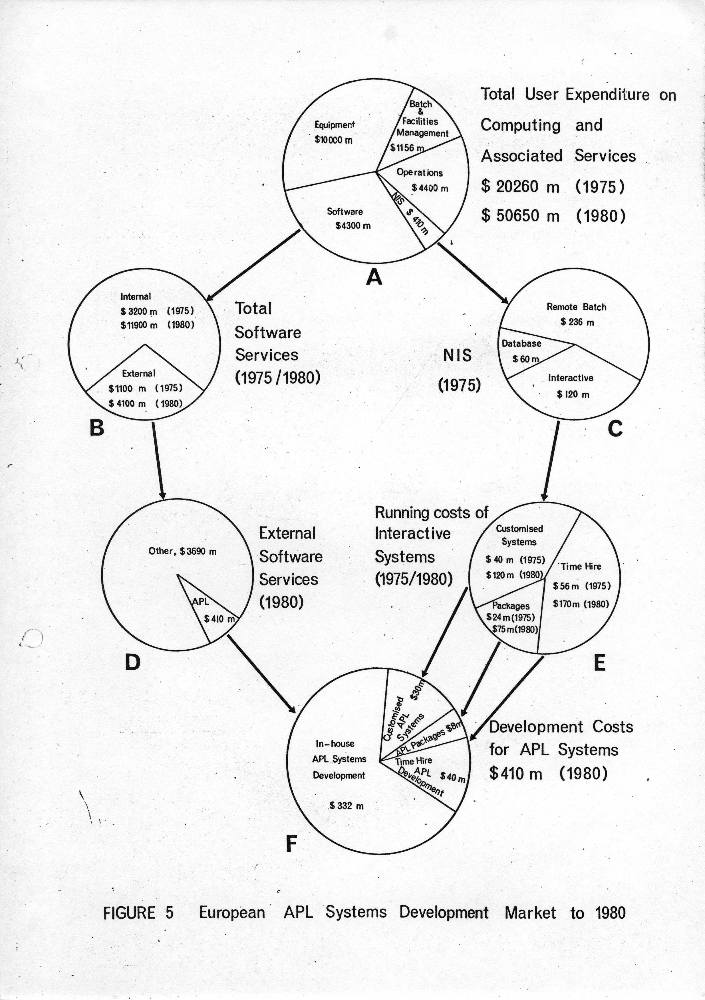
(from company prospectus)
The company had grown to about 15 analysts by the early Eighties. But the tide was ebbing from the time-sharing business, and washing out the demand for consulting as well. IBM was promoting VSAPL as its primary personal and departmental computing platform, along with ADRS and ADS; this was a potential source of further demand for consulting. Or there was the nascent market for personal computers.
[DC] The early Apple computers, aided by the incredibly successful implementation of VisiCalc had taken the business community by storm. The IBM PC escalated that momentum.
In principle, Dyadic, with no time-sharing business to manage, could simply switch horses and write APL programs for PCs. But there were few APLs for PCs about.
[DC] One [was] the rather quirky MCM micro, whose APL interpreter was in firmware. It had an idiosyncratic reverse implementation of the scan operator and limited the size of arrays to 255 elements along each axis. It provided the facilities to generate a GUI interface, at least in providing form-based input and output. But it was slow.
More substantial APLs had been implemented for the IBM 5110 and for the Motorola 68000 chip, available as Wicat computers. Even Bill Gates contemplated writing one.
[Gitte Christensen] Because the IBM 5110 had BASIC and APL, he’d done the BASIC and they’d sold about 50,000 copies of it. Now he wanted to do the APL. He looked at it and went to talk to Ian Sharp [of I.P. Sharp Associates] about a reduced APL – how little one could get away with. Then, apparently, Bill Gates decided the APL he contemplated was not commercially viable.
A new company has been set up…
The abstract concepts of APL mobilised the power of large computers without requiring its users to write close-to-the-machine code. That is, they could think more about their problem and less about how the machine operated. But the tiny micro computers, while offering immediate responses, required exactly that close-to-the-machine programming to get useful performance.
[DC] With time sharing, processing power had not been a major problem. The problem was one of response time from dial-up modems through slow and often noisy telephone lines. However, the number-crunching capabilities of the central host computer meant that seriously large applications could be tackled. The move towards micros more or less reversed these characteristics. This development did not favour the large array-handling capabilities of APL interpreters. APL really needed more powerful processors.
Pauline Brand’s sister, Dr Pamela Geisler, was then head of Zilog UK. She wanted an APL for the Z8000, since the Swedish Ministry of Defence, in a call for tenders from Unix suppliers, had listed APL as a software requirement.
[DC] During the Seventies, the most popular chip in micros was the 8-bit Zilog Z80, popularised by Digital Research’s capable CP/M operating system. Their 16-bit Z8000 chip was newly available though its niche was oriented more towards mini- rather than the microcomputers, supporting a small network of so-called ‘dumb’ terminals. Moreover, Zilog had embraced the Unix culture, which was the ‘next big thing’ in distributed computing. With the support on offer from Zilog to provide us with a dedicated Z8000 minicomputer and generous development facilities, we thought that this was the way forward.
Dyalog (Europe) Ltd¶
For this project, David Crossley, Phil Goacher and Ted Hare registered a new company in 1981.
The new APL interpreter would require programming time and a development machine. They planned to fund the programming with a government grant. The machine would be provided by Zilog, who made microcomputers. Operating from Phil Goacher’s spare bedroom in Epsom, the new company blended both names: Dyalog (Europe) Ltd.
A new company has been set up to develop an APL processor for the about-to-be-announced new series of Zilog micro computers based on the 16-bit technology. This company is DYALOG (EUROPE) LIMITED, the name Dyalog being a hybrid derived from Dyadic and Zilog.
We have negotiated an agreement with Zilog whereby we will develop the processor whilst Zilog will provide technical support, priority access to their development machine (Z-LAB 800 System, pronounced ZEE LAB!) and a preferential marketing arrangement.
The success of the project is underwritten by our coup in securing John Scholes to lead the development, supported by Geoff Streeter. John is already known to many of us. His achievements in the world of APL are impressive, having been responsible for the installation and support, not to say improvement, of the Xerox APL processor when he was with Atkins Computing. Subsequently he was one of the senior implementers of APL for the ICL 2900 series. In addition to supporting APL and actually developing processors, John has also spent a not insignificant part of his career at the sharp end, supporting APL users and writing applications systems. It is unlikely that there are many implementers of APL for micros with his pedigree for the task.
David Crossley will coordinate the technical aspects of the project, now in the design phase, with particular emphasis on the marketing aspects of the product – playing devil’s advocate if you like.
Ted will front the marketing effort working closely with Zilog, and will also be concerned with the direct sales and sales support in our role as dealers.
Phil will be concerned mainly with the general administration and finance and also documentation.
Dyalog’s business plan was summarised in an admirably concise “Marketing Strategy” paper.
Our plan is to develop a low-price:
- Industry-standard APL interpreter (Sharp look-alike but more comprehensive)
- Running on an industry-standard 16-bit chip (Z8000)
- Under an industry-standard operating system (Unix)
‘Industry-standard’ was a popular term in those days, marking hope more than reality, and often used as code for ‘Unix’, which was then neither standard nor even common in industry. Software was commonly limited to machines from a single manufacturer, and manufacturers worked hard to attract applications that would help sell their machines.
The marketing strategy continued:
[The plan has] the aim of expanding considerably the existing APL market for small machines and making it easier for Zilog dealers, including ourselves, to capture a significant proportion of this increased market. The initial target machine is the Zilog Z8000 system using ZEUS (derivative of Unix), but versions of the interpreter for non-Zilog Z8000 systems, INTEL and MOTOROLA running under Unix could subsequently be developed.
Marketing will begin in earnest from next January when advantage will be taken of the increasing press interest in APL to release details of the interpreter and its planned availability. This will be followed by promotional activities aimed specifically at the existing APL community, eg presentations/seminars to North American and European user groups and to specific clients of Zilog and ourselves, participation at APL82 and APL83, direct mail and promotional press advertising (usually in conjunction with Zilog's own 'brand' advertisements.) Selling to existing users will be handled by Zilog (either directly or through dealers) and ourselves. Selling to the vast new market of potential APL users in Europe and North America will be left predominantly to Zilog's existing network of dealers who will be encouraged by very attractive mark-ups (100%), presentations at dealer conferences, participation at key exhibitions, and by promotional advertising.
How long would it take to write an interpreter from scratch? Not that long, apparently. Marketing was to start three months later, and they planned to have something to show at APL82 within nine months.
It is important to understand that Dyalog is a development company and not a sales organisation and its activities in this field will be confined to promotional marketing with Zilog. Initially we shall be selling equipment through Dyadic Systems and Systemcraft, however, this type of work is very different from our normal business and may benefit from the formation of a separate organisation next year which would recover its heavy sales costs through hardware and software dealer discounts. Direct selling costs therefore have formed no part of the financial model of this development project.
The financial model, showing the returns expected from the project, started with sales projected in agreement with Zilog. The plan was to sell about a thousand copies over seven years, three-quarters of these through Zilog and its dealers. Zilog dealers would pay £1,000 a copy in 1981 prices and might sell on at twice that. Dyalog (Europe) was planning to sell a million pounds worth of interpreter licences.
The company was formed and the two programmers started writing the interpreter.
[DC] We set up a new company, Dyalog Limited, composed from DYAdic Systems and ZiLOG. (The association with dialogue – or dialog in American English – had a certain serendipity to it.) Geoff Streeter expressed a strong interest in becoming involved, and so joined John as co-developer. I made up the development team in the role of technical adviser regarding the user functionality of the product, project co-ordination, and later the production of the user manual, of which I wrote a major portion over a two-week period in hospital. (There was not much else to do there.)
Writing the interpreter¶
There can’t have been that much to do back in the office, apart from write the interpreter. That was done from their homes and in Zilog’s offices in Maidenhead.
[John Scholes] David Crossley managed and documented the project and Geoff and I coded it. If there was a problem, Geoff and I would just slug it out between us really. If there was a strategic decision, we would discuss it with David. And, to be honest, a lot came down to people’s taste. The correct way of doing it, of course, is to research all the journals – but we didn’t have the time. Geoff and I had a lot of interest in APL, and we had some historical conference proceedings. But we didn’t have access to the current information on what was going on. We had nothing but experience and a fairly large amount of historical information.
It was a hot spot. (Maybe we should whitewash this to show we did it after consideration.) But actually there was a lot of subjective “yeah, we will do it this way”. Which is why it took Geoff and me only fourteen months to implement a second-generation APL from scratch. (A previous interpreter I had worked on had taken 28-man-months to bring to the same state.) What we achieved is actually impossible; you can’t do it that fast, but we did. And sometimes I probably made decisions without knowing I was making them.
We just went in and did it. We didn’t have committees or the Internet, we just got on with it.
Zilog wanted the interpreter written in PLZ/SYS, which would have restricted it to Zilog machines. Scholes and Streeter chose C.
[DC] What turned out to be a prescient decision was the choice of C, quite natural under the Unix operating system, as the coding language for the interpreter. Its portability proved itself in porting to other Unix platforms, but much more importantly in the later conversion to the Microsoft Windows platform, whose underlying development language is the C++/C# descendant of C.
The plan called for writing, not a primitive APL like the MCM machine’s, but a full-strength second-generation APL comparable to the languages provided by market leaders like I.P. Sharp. There were many choices to be made about what to include. But the big choice, that could not be deferred, was between the two competing schemes for nested arrays.
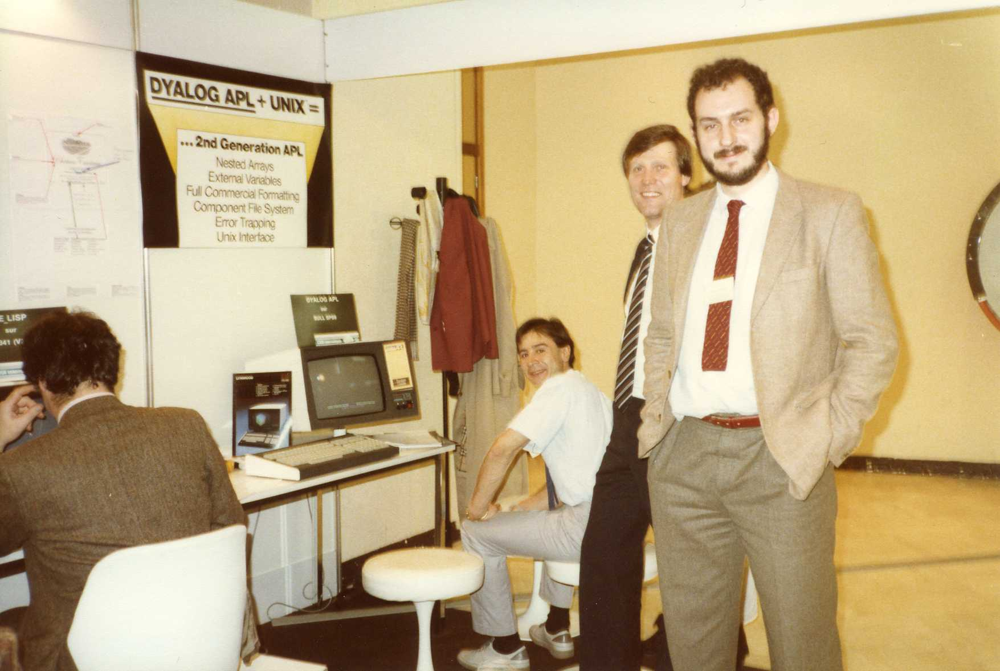
Unix Europe Expo, Paris, c.1984
Two schemes had been devised and explored for nesting arrays. The elements of ‘flat’ arrays could have no shape themselves. They had to be ‘scalars’: individual numbers or characters. Nested arrays removed this restriction. An element of an array could be another array; and so on, to unlimited depth.
The trick to making this work was a new function called enclose. It turned an array into a scalar, as if wrapping cling film around it. A corresponding disclose function removed the wrapping, revealing the shape of its content.
The difference between the two schemes turns on what happens when you enclose a scalar, such as a single number. In the ‘grounded’ scheme, it gets cling-filmed. In the ‘floating’ scheme it does not.
Language designers had different intuitions about how to do it. Experimental implementations were built and explored for both schemes, and were found to have subtle and profound differences. Each scheme had advantages the other did not.
Researchers tried valiantly to reconcile the two schemes within a single, more general scheme. These attempts failed. Systems written using a floating scheme could not be mapped to a grounded scheme, and vice versa. To migrate an application between floating and grounded array systems would require extensive reprogramming. The APL world was about to divide. Dyalog had to take one side and reject the other.
[DC] It would incorporate the nested-array extensions based on Trenchard More’s proposals. These were later released as APL2 under the iconic leadership of Jim Brown, but had also been released as Bob Smith’s Nested Array Research System (NARS) at STSC for assessment by the APL community.
These public-domain extensions were widely discussed in papers presented at various SIGAPL conferences. I.P. Sharp under Kenneth Iverson’s tutelage had proposed (and they later implemented) an alternative approach to enclosed arrays, as they preferred to call them, that had a different fundamental basis. (More’s proposal decreed an enclosed simple scalar to be identical to that simple scalar, whereas with Iverson’s the enclosure creates a deeper structure.) Whatever the theoretical arguments, I think we made a pragmatic choice. The elegant extension of strand notation in More’s proposal simplifies coding, despite the inconsistency that one cannot have a single-element strand. We adopted the IBM/STSC route.
Another innovation, included in NARS but oddly not incorporated later by STSC in their first official release, would be user-defined operators. I think the concept of operators as distinct from functions was hazy to many APLers at the time. Indeed, some variants of APL referred to functions as operators, as is still common in other programming languages. Of course, operators had been with us from the beginning in the form of scan, reduce, inner- and outer-product. The ability to define one’s own operators helped to make the distinction clear, as well as extending the power of the language.
Future versions came to incorporate innovative extensions such as namespaces, threads, dynamic functions and operators, and OOPS extensions for .Net compatibility. But at the start we were careful to avoid controversial changes to the language. We introduced the zilde symbol
⍬to represent an empty numeric vector, thus avoiding extra parentheses when writing a strand. Four new primitive operators were added: monadic and dyadic each to process enclosed arrays; compose to ‘glue’ functions together; and commute to reverse the arguments of the derived function, aiding readability by reducing the need for parentheses. We extended the definition of some functions; for example, grade up and grade down to incorporate the useful features already found in SHARP APL.We trawled through the various system constants, variable and functions found in other versions of APL, and reduced the list to a manageable subset, though of course retaining those regarded as standard. We also added a few of our own based on a wish list drawn from our collective experience.
A little background to the
⎕SHADOWsystem function, which allows dynamic localisation of names, might be of interest. Geoff and I had collaborated in the development of an application-management system called ProgramSystem, which was presented in a paper at APL79 in Rochester, NY. Contemporaries will remember the small workspaces that were available at the time. The system analysed objects needed to perform tasks that would be defined in the workspace through small cover functions, dubbed ‘overlays’, expunged on completion. We hit on the idea of localising the object names in the cover function. Dynamic localisation struck us as a neater idea.[Geoff Streeter] Really! I thought the driving force was to be able to avoid the sort of system management code that used names like
∆∆⍙⍙in an attempt not to clash with the names of things being managed.⎕SHADOWallows you to evaluate the names in your environment and pick non-clashing ones. The ProgramSystem code didn’t really need it. It used additional)SIdepth instead.[DC] Starting with a clean sheet has its advantages when a completely new concept is incorporated into the language. Support for nested arrays was just that. John and Geoff designed an elegant ‘tupple’ method to identify and track the various data types, including distinct numeric data types for numeric data to reduce storage space, and a new pointer data type to handle nested items. Core memory was not generously available as nowadays, so an early decision was to incorporate a virtual design that would allow workspaces larger than physical memory, using disk-swapping techniques. The design trade-off between processing cost and frequency of workspace compaction resulted in a useful solution: a workspace-full condition would trigger a compaction that might resolve the situation of itself; alternatively, issuing the
⎕WAsystem function would force a workspace compaction under program control.
In contrast to the broad brushstrokes of the single-page marketing strategy, the Technical Overview of the project ran to five closely-typed pages, starting with a description of the target machine, and proceeding briskly to a long shopping list of features and design choices. The technical work had clearly received a good deal of thought.
The description of the target machine will raise a rueful nostalgia from older readers, and pity and amazement from the young.
The new series of micro computers just released by Zilog are based on the Z8000 16-bit chip. Sixteen-bit technology provides a quantum leap in processing capabilities compared with the 8-bit micro processors. The ZLAB-8000 processor, a development machine which is being commercially marketed as System 8000, is provided in its standard form with 512 K-bytes of real memory and a 24 M-byte Winchester disk unit. Its cycle drive is 12 MHz (compared with 4 MHz for the MCZ2 8-bit microprocessor). However the most significant benefit from APL's viewpoint is the great increase in memory. The Z8010 memory management chip, incorporated in the new series, is capable of managing many mega-bytes of real memory.
The ZLAB-8000, and its equivalent marketed product, is a multi-user, multi-tasking processor. It operates under ZEUS, Zilog's derivative of the widely-acclaimed Unix operating system, developed by Bell Laboratories. Numerous programming languages are supported, including the implementer's C-language, of which more later. It performs in essence as a time-sharing machine. An authority on the subject has suggested that its performance is likely to be better than a Sigma 9!
Unfortunately, the ‘authority on the subject’ was substituting enthusiasm for accuracy.
Going to the show¶
[DC] Our schedule was to have a working interpreter within twelve months, with the objective of presenting Dyalog APL to the world at the APL83 conference in Washington DC. We monitored progress and revised our estimates at monthly intervals, or sometimes on an ad-hoc basis. We met our objective and presented our product at Washington in April 1983, complete with user manuals, on a number of Unix platforms kindly loaned by the manufacturers.
One rather large and heavy mini-computer arrived rather the worse for wear, having been dropped by the delivery people! Our sponsors were not amused – and neither were we.
Not all the scheduled features were complete, but certainly the essential features – and a great deal more beside – were achieved.
[JS] Pete used to organise the conference booths, I think. I spent most of the time at APL83 behind a curtain coding, because we had problems with the compactor. It’s surprising Pete still has any hair left, with the organising and borrowing of machines, making sure it all arrived and had Unix on it. It was horrific.
[Pete Donnelly] At APL83 I was astonished at how many companies were there exhibiting. It was huge. There were thirty or forty APL businesses with stands there. I also remember the salesman from Gould saying it was the smallest exhibition he’d ever seen in his life, and wondering what was he doing there.
The stars of the show were STSC and The Computer Company. Phil van Cleeve must have had 30-40 different 68000 machines running APL on his stand. They had hordes of people typing on their machines all day. It really was quite impressive. MicroAPL had a typically showy stand. We were ignored by everyone, except the guys from STSC, and I spent almost my entire time on the stand demonstrating to them.
One of the 4-5 non-STSC people who visited the stand was Jim Goff, who actually ended up buying a copy of Dyalog APL. I think he bought the second licence.
And nested arrays: that was a disaster. A lot of people said they would not buy it, because it had nested arrays. One of my sales points was: you don’t have to use the damned things if you don’t want to.
They didn’t really come out until later. They were much discussed at APL84, among the 5-6 people at the top of the tree, but the APL food chain didn’t really know anything about them.
[GC] When I was taught IT back in 83-84 they showed us relational database theory, but it wasn’t called that at all, it was some kind of data-modelling thing. IBM worked on these nested arrays to be prepared for the DB2 release, to have some way of handling that data once their database came out. And no one understood why the hell you wanted nested arrays until they had to deal with data from relational databases. And then it all became obvious, because it was so useful for that.
A major technical milestone had been reached and the product, or at least a working prototype, had been demonstrated. There were still serious technical challenges to meet. For example, the interpreter, running on a million-dollar Gould mini, was outperformed by STSC’s new APL*PLUS on a mere IBM PC.
Dyalog had ignored the IBM PC in its original plans.
[PD] At that time we didn’t know what was going on outside our closed little world. I’d never seen an IBM PC until we went to APL83.
[GS] We didn’t take any notice of the early PC, because the addressing was horrible; whereas STSC went for it. We didn’t take any notice of it until the 80386 chip was launched in 1986. We were a Unix company for a long time.
[PD] They didn’t know what we had to sell. No one knew what Unix was. It was a bit like saying, we’re a purple APL; it didn’t mean anything to anyone at the time. So we weren’t offering anything anyone was interested in.
We just didn’t have anything in the product that people were asking for then. I don’t think I sold in the first two years more than three or four licences. Those kind of numbers: it certainly didn’t get to ten.
Ports on call¶
Dyadic only ever sold one APL licence through Zilog, to an unknown user in Denmark in 1983. What had happened to the joint sales plan?
[JS] I think Zilog was hoping for a huge market share in the 16-bit market. That’s right, there were the mini-computers, and everyone with a mate and a garage set themselves up as a Unix machine manufacturer and built a Unix machine and sold it. It is possibly not an exaggeration to say there were hundreds of Unix machines – dozens of Unix machines, anyway. That was the way to go. People buying these machines typically asked: has it got FORTRAN, and COBOL, and increasingly the question was: has it got APL? The manufacturers just wanted a tick in that box. They didn’t care what it looked like, they just wanted a tick in the box. And Zilog wanted a tick in the APL box. I think that’s how we were involved, how we were attracted to Zilog.
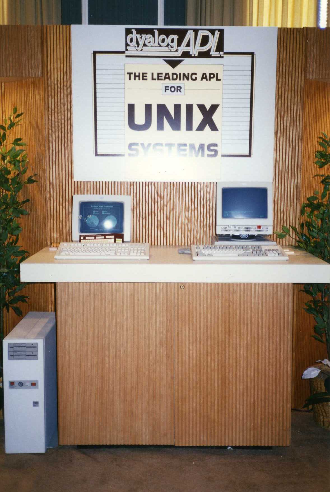
So we did all this, and then I think the Z8000 fell by the wayside, for commercial reasons. They didn’t compete well with Sun, I suppose.
That one person who wanted a Zilog machine with APL was an easy sale. But from Dyadic Systems’ point of view we were trying to sell them APL – what’s that? – running on a Unix operating system – what’s that? – on a Zilog computer – what’s a Zilog? So to get new business for Dyadic was a three-stage sell. We only had it available on Zilog, and if our prospect didn’t have a Zilog machine there was some resistance to getting one.
[PD] I was trying to sell what we had. The pressure to do ports came pretty much immediately and we did that for probably 2-3 years before getting down to product improvement.
Unable to sell the interpreter into the mainstream APL market, Dyalog found itself talking to other Unix manufacturers who also wanted a ‘tick in the APL box’. This was a subsistence business, since each port led generally only to the sale that had prompted it, and only rarely to further sales on the same platform.
[JS] So one of the first things we did was port it to other machines. Fortunately we had written it in C, so we could do that. The C compilers in those days were very buggy, and we ported the product – a dozen, two dozen, three dozen – times, onto different Unix platforms. And the work was dreadful because the compilers weren’t working well for the first five years of porting. We never found a C compiler that worked properly and didn’t have any bugs in it. So porting was trying to code around it really as we didn’t have access to all the compilers. Our code is still littered with workarounds – although Geoff and I have been taking a lot of it out over the last decade. But the code still contains statements such as: if it’s PERQ, do it this way; if it’s MASCOMP, do it that way, and so on. There is a whole archaeology in there if you start digging. Our survival depended on our ability to port.
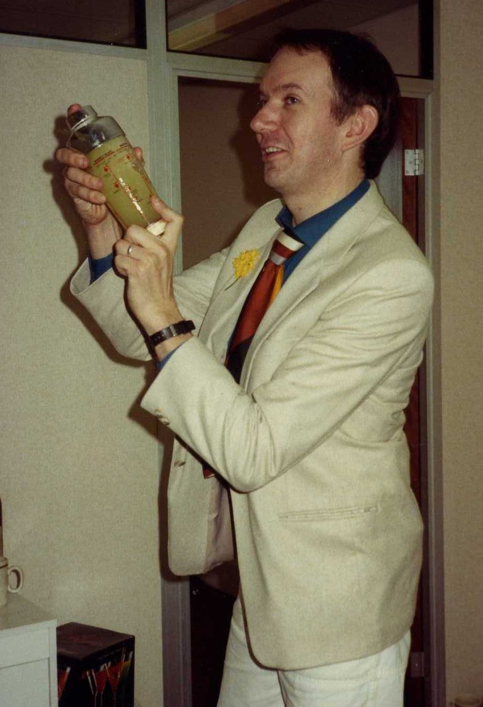
And that is what Geoff and I did. It was horrible work. One of my memories is being locked in a basement in Paris with a Honeywell Bull. The correct description is: a nasty cellar, with a nasty piece of software on a nasty machine, with a nasty, dirty keyboard and nasty coffee and nasty loos until we got it done. There was a lot of that. It was quite stressful work. I think they promised us this was the last port you’ll ever have to do, after this you’ll be able to do some development. That was a low point.
[GS] At least the food was good. And I got arrested going into France. Dave Gordon and I were both going to Honeywell in Paris to do a port. We both took reel-to-reel tapes with the source on it, and floppy disks to put the releases on. Dave flew to Paris and had no problems at all. I took my motor cycle across on a ferry and was going to ride down to Paris. As I came out at Cherbourg, the customs guy stopped me and demanded to see inside my panniers. Inside was this tape, and some floppies. He said, what’s this, and carted me off to the police station. Of course, by this time, Dave had actually arrived in Paris, so the data I had on the tape was worthless, because he had a tape with the same contents. The big problem I had with the customs guys was that I had a box of floppy disks, which were worth about forty quid, in those days, and the reel-to-reel tape was worth four quid. And they could not believe that that could possibly be the case. Anyway, they let me go eventually, and I rode down to Paris.
That was the only time I ever got arrested. I never got arrested on political demos. Dave Crossley used to say that was how he remembered how APL rotate works – from my politics: a left shift is a positive shift.
[JS] How long did a port take? Well, it took as long as it took. What should happen, theoretically, is that you turn up with your C code; install it on the machine; you type make; it spends however many hours it needs to compile everything; you put it on a disk and you ship it. But what actually happens is that the compiler breaks, so you have to find the problem, using low-level machine code for debugging. Geoff is much better at solving compiler bugs than I am. Effectively, we weren’t debugging our software, we were debugging the system software.
We couldn’t afford to own a Sun Microsystems machine, or a MASCOMP, or a DEC, or a Gould and so on; so we had go and beg. But normally it was quite a good deal. You know: we’d say, you probably want an APL on your machine, because people are probably asking if you’ve got it. So no money changed hands. They gave us the facilities to go and port.
[PD] Actually, I tried very hard (but not always successfully) to get them to pay us!
[JS] The third port we did was the Gould 3000, long since dead. We got some way into the project and realised our memory manager wasn’t going to work on that, because the Gould insisted that floating-point values were 8-byte-aligned, otherwise it gave a hardware interrupt and croaked. Our memory management was just 4-byte-word-aligned. On the Zilog we’d decided it would be 2 byte-aligned words, because that’s what the Zilog did, 16 bits, and if you had a floating-point number, that was just a bunch of bits which it loaded (in its own sweet time) into its FP emulator, so the alignment wasn’t a problem. So the memory manager was word-aligned; when we moved to a 32-bit machine, that was 4-byte-word-aligned. But the Gould insisted that all floating-point numbers were on 8-byte boundaries. That was a bugger. That was a hard one to fix.
[PD] This was entirely my fault. I was desperate to win a benchmark and at the time the Gould was the fastest Unix box on the market. This might have been the port where the normal mechanism to detect the end of a pipe (eof) didn’t work, so Geoff ended the message sent to or from an AP with the string
reteerts ffoeg.
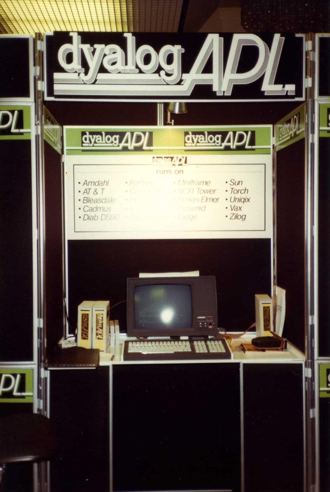
[JS] I always had it in mind to phone Dyadic support one April Fool’s Day, with a heavy mid-European accent, claiming to be Mr Reteerts Ffoeg. “I hev problem vis APs on Gould 3000; ven send my name across interface, AP hengs…”
So the Gould took – I don’t know how long the Gould port took; it could have been months. Typically they were – Geoff may have a different view, but probably – they would be a month. People would say: Have you got it on so-and-so? And Geoff and I used to mutter in the background and suggest that we say if you want it, charge them twenty grand a port. But, as I said, every two men and a dog with a garage used to invent a Unix machine and someone would come along and say, can you port your APL to it; if you port APL to this machine we’ll buy it. We’d spend a couple of months porting to it, they’d go out of business, and we’d cross it off and carry on.
Pete has a wonderful poster – there’s a photograph somewhere – of one of our booths at one of the exhibitions. It says, Dyalog APL is now available on – machine after machine – and none of these machines exist anymore. They came and went. Near the top of the was a ‘Bleasdale’, named after the company’s founder, Eddie Bleasdale.
| Amdahl | Fortune | Miniframe | Sun |
| AT & T | Gould | NCR Tower | Torch |
| Bleasdale | HP9000 | Perkin-Elmer | Uniqx |
| Cadmus | ICL Perq | Pyramid | Vax |
| Diab DS90 | MASCOMP | Ridge | Zilog |
[GS] On that list of machines is the ICL Perq, which was a rebranded ‘Three Rivers Perq’. It may not exist any more, but it was the forerunner of the Apple Mac. I remember being stunned at the interface, complete with a tablet and ‘puck’. These days, think Wacom for that sort of tool. The Perq was strange because pointers to ‘words’ were 4 bytes but pointers to characters were 6 bytes. That caused some fun.
The disappearing future¶
The future on which the Dyadic directors had staked the company was taking too long to arrive. There was a market for APL on a minicomputer, but the working prototype demonstrated at APL83 on a million-dollar Gould mini had yet to beat STSC’s APL*PLUS on an IBM PC.
[PD] At that stage Dyalog APL was almost unsaleable. Our primary platform, the Zilog, was a total commercial disaster. Our most hopeful platform was the DEC VAX which, in its Unix format, had cornered the educational market. However, most university computer departments regarded APL as some kind of devil worship.
An early view had been taken that what mattered were subjective response times and that absolute benchmark timings were irrelevant. That theory had been tested to destruction.
[PD] A couple of Dyalog APL for VAX licences were sold but customer reaction was very poor. I remember trying to explain to an irate customer at the University of Colorado why Dyalog APL on their top-of-the-range VAX performed at half the speed of APL*PLUS on a bottom-of-the-range PC. I seem to remember sending Geoff over to Colorado to fix bugs, make it faster, and generally placate them. I think that Geoff learned to ski on that trip. In those days there were as many bugs caused by faulty C compilers as there were caused by faulty programming, and reliability was also a major bug-bear.
However, speed (or rather, lack of it) was our fundamental problem and it would take years of re-development to resolve this issue. Dyalog APL had, necessarily perhaps, been designed within the constraints of a 16-bit architecture and optimised for space rather than for speed. In producing a working second-generation APL in only four man-years, many shortcuts had been taken. I think I remember Geoff telling me he had written dyadic iota in a day. I definitely remember constant complaints that our implementation of dyadic iota was desperately slow!
[GS] Most of the complaints about slow dyadic iota were from people who habitually packed characters into double-precision variables to get over the lack of nested arrays elsewhere. (I still get complaints about dyadic iota.)
A broad market for Unix minicomputers was still years away. Revenues from the consulting core of the company continued to shrink.
[DC] The directors of Dyadic Systems had taken a calculated risk in developing Dyalog APL. In 1981, the consultancy business remained profitable, although we foresaw an uncertain future. The first phase of development, culminating in its debut at APL83, was scheduled to take a year, which we felt could be financed from Dyadic resources. Zilog provided equipment and facilities. So our first-year commitment would essentially be three salaries plus relatively small additional expenditures.
Thereafter we expected the salaries for two full-time developers to continue, but sales and marketing expenditures would start then. We applied and received approval for a substantial government grant for new development in technology that could be extended to support a portion of promotional costs on successful product completion. In order to obtain approval, we presented our financial case, which included examination of our audited accounts by the grant administrators.
Dyalog APL made its debut at the APL83 conference. […] However, our finances had gone pear-shaped. We were hit by a double whammy.
Firstly, we were due to receive grant payments in monthly instalments. We had been led to expect instalments to begin within three to six months of application, subject to approval. Although approval was given early on, the bureaucratic process was alive and well, or not so well, from our point of view. Instalments started some 15 months after application, or to put it another way, some three months after completion of the primary development phase, and the debut at APL83. In retrospect, we over-relied on this funding, which should have fully covered our first year’s development costs. The gap was covered by Dyadic Systems.
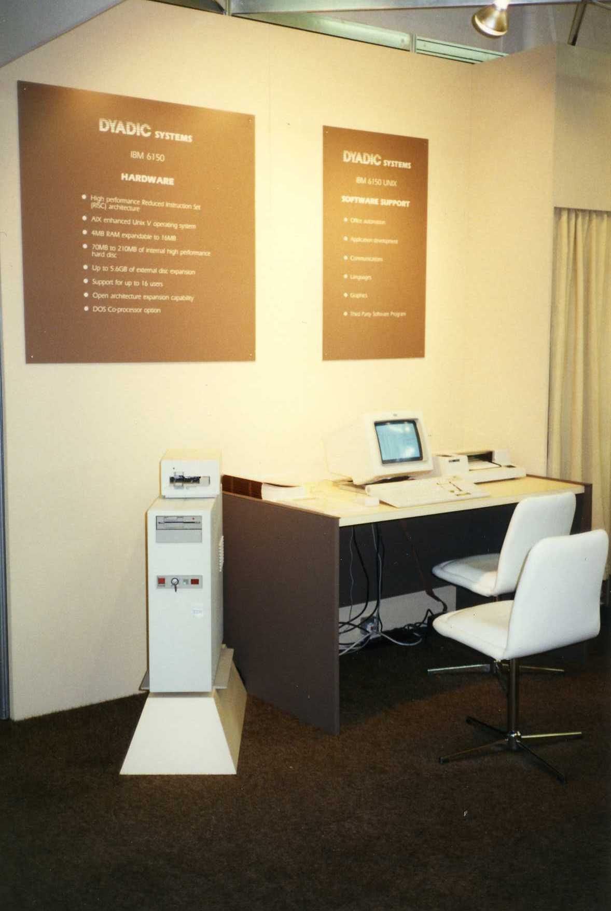
Unfortunately, by early 1982 APL consultancy work had dwindled more quickly than we had anticipated, an experience we shared with others in this business. Revenues were not strong enough to carry the development process. We directors were probably too slow to take decisive action. After all, that would mean redundancies. We were a very close-knit group, which had already seen steady increase in size over six years with, I think, just two departures. We delayed until the summer, but could not avoid four redundancies, a painful experience for which I feel much regret. A bond of trust was broken, and shortly after, two more consultants resigned.
Although the grant instalments started in 1983, it was by then clear that the consultancy business was not itself sustainable in its current form. It could provide a core of competence for the support of Dyalog APL, now a saleable product. But that would require new finance.
[JS] So we came back from Washington, and did the portings, but the company could not sell enough of the product to replace the disappearing consulting revenues. At some point Lynwood Scientific stepped in and made an offer for the company. And really, they just wanted Unix expertise; they wanted Geoff and me, I suppose.
At this point I had to go without pay for a while: I was a contractor, I wasn’t employed. I forget what I was called. And I was a creditor – is that the word? They owed me money: Dyadic Systems owed me three months of bills. I had a big mortgage, wife and children. You know: it was bad news.
[GS] After we’d been in Farnborough for a bit, they decided they were running out of money and they were going to pull the plug on the company, and we worked, for about three months or so, on no salaries.
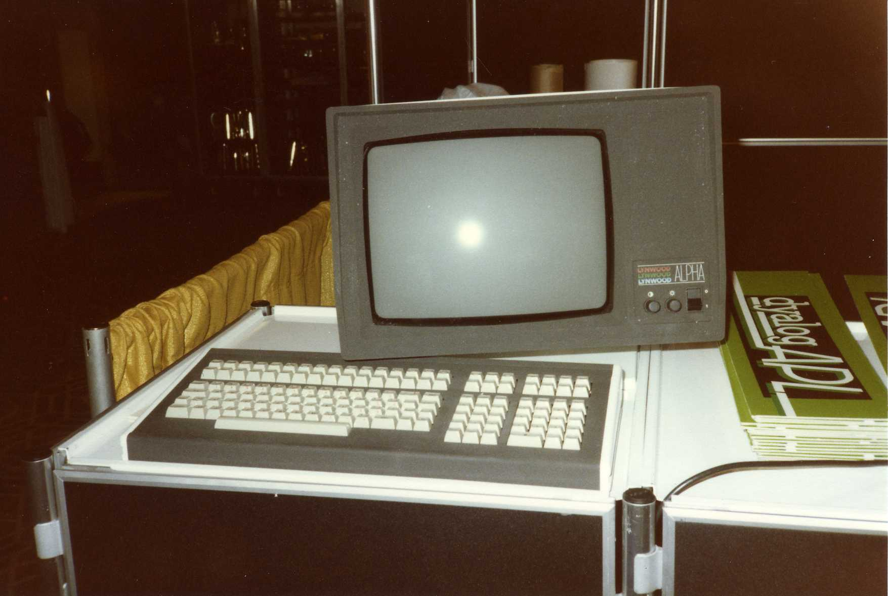
Living with Lynwood¶
In 1983 many people outside the APL world saw Unix as ‘the next big thing’. Among them was Lynwood, a manufacturer of intelligent terminals, with a well-established niche in the British defence market. The Lynwood Alpha terminal was a classic despite a slight tendency to self-immolation, and Lynwood had made an APL version of it. Donnelly had written a graphics package (in MIPS APL for Prime Computer) that exploited the graphics capabilities of the Lynwood terminal. (Dyadic was at that time the UK distributor for MIPS APL.)
[PD] Lynwood bought the Dyadic companies in 1983. One of the conditions of the sale was that all of the employees who had purchased ‘royalty options’ in Dyalog APL waived these royalties.
In the heady days of Dyalog’s formation, certificates of future royalty entitlements were granted. Some have survived:
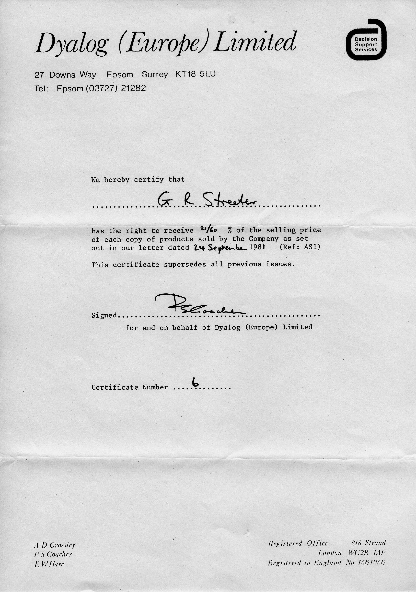
[PD] The company was then run as a wholly-owned subsidiary of Lynwood Scientific and I was appointed ‘Operations Manager’. We retained a single consultancy contract (with Commercial Union) who paid for the services of Martin Tann, John Stembridge and Ray Cannon as APL contractors. After a few months, John left to start up his own business, Ray went free-lance but stayed at CU, and Martin joined the APL development team. Soon our revenue from consultancy joined our revenue from Dyalog APL at level zero. After three months, Lynwood’s chief accountant (the aptly double-barrelled Bill Coutts-Donald) tried to close us down, but for some reason Lynwood’s MD Hector Brown decided stubbornly to continue.
Lynwood fancied Dyadic’s Unix expertise, centred on Scholes and Streeter, for developing its ever-smarter terminals. But the pair could not be budged from the APL interpreter, continuing to port it to machine after machine.
[GS] I think they wanted our programming expertise, more than anything else. But we were all too committed to APL.
[JS] Lynwood effectively took over on the understanding that Geoff and I would sign on for twelve months. They paid everybody’s back salary. But it was a tough time. Everyone else – also Geoff – was an employee. I had come in late on the deal as a contractor with the Unix expertise. And for the rest, their Unix expertise was whatever they had picked up in the office. Pete became a Unix expert as well. The company as a whole had absorbed the Unix philosophy.
So the three directors left the company, leaving Geoff, Pete, Ray Cannon, Pauline Brand and myself. Who else? A couple of people were there as well, but I didn’t really know them well. The way the body shop worked, people lived at home and worked at the client’s site; we didn’t really see them in the office very much. At that point we had an office over a butcher’s shop in Farnborough. Pauline was there, and lived locally. There was a secretary, Leslie Gould, who was the nerve centre of the company. So in the office were Geoff, Pete and I. Effectively what Lynwood did was buy a company and chop the head off – the three directors – and then everyone else got to stay. And they chose Pete to head the operation. Ray Cannon was there, and a guy called Martin Tann, whose name still appears in the code: he invented a really nice trick with the component file system.
Lynwood was in the terminal market. People were putting more and more intelligence into their terminals. And they were shaping up to be another two men and a dog, making a Unix machine. So they wanted to convert one of their terminals, their posh Lynwood J5 ‘goes bang in the night’ terminal, into a Unix machine. But they had limited on-site Unix expertise. So their idea was to buy a company with Unix expertise and set them to work making a Unix for these terminals.
And actually they got it wrong, because they didn’t know what they’d actually bought was crazy APL bigots, who were more devoted to APL than Unix. They tried for a long time to split us and make us forget APL, re-educate us into the Unix way. I think they got Martin Tann. But the rest of us, because we were like a family business, we were such a tight unit, we didn’t want to play, effectively. They started us off as a separate profit centre within Lynwood with a view to cherry-picking the best resources so that we would fizzle. But we were such a tight little unit, we didn’t do that.
[GS] There was also Dave Gordon, and Lynwood did persuade him to move across to their Unix development. The other thing about the Lynwood Alpha was that is was built around a Zilog Z8000 chip. John and I knew Z8000 assembler because, whilst we had written in C, all of our debugging was done at the assembler level. We didn’t have any source-level debuggers.
Undeflected by Lynwood’s intentions for the “crazy APL bigots”, Scholes and Streeter got on with extending the interpreter.
[PD] Despite the problems, revenues from Dyalog began to creep slowly in from unlikely sources. CISI, a large French company, had committed (to the French government) to implement a system (LIBRA) for the administration of French libraries, written in APL, to be deployed on French computers running Unix. Dyalog APL was their one-and-only hope of delivery and CISI became our French distributor. Our biggest sale was of 30 copies of Dyalog APL for the ‘Fortune’ (an American Unix box which had been re-badged as a French machine) to the French Ministry of Culture. They bought the licences only to spend a budget that would otherwise have been cut the following year, and the diskettes and manuals were securely locked away in a safe and never used. There were no customer complaints.
The requirement to deploy on French computers gave us the opportunity to charge for porting. Some of John and Geoff’s most unpleasant memories of Paris were actually milestones in my attempts to find ways to pay our salaries. CISI also got Dyalog APL into the EEC in Brussels and Luxembourg. However, Dyadic continued to operate at a substantial loss.
Our first major breakthrough was when Pauline Brand and I managed to persuade SimCorp to adopt Dyalog APL for Unix to deploy their portfolio management systems. SimCorp subsequently developed a special product for British building societies who had just been deregulated and were setting up their own dealing operations. The deployment of the SimCorp application on Dyalog APL for Unix also lead to more porting opportunities, as some of the building societies had sole-supplier contracts with their hardware partners (e.g. Unisys). Despite the pain and anguish suffered by John, Geoff, and others, porting was fast becoming a major source of income.
In the six years from 1984 to 1990, we effectively completed the development of Dyalog APL as a viable product, with attention paid to what customers wanted.
Of course, we didn’t agree on anything. A good example: not having the (APL*PLUS)
WPUTandWGETfunctions was a major disadvantage, because, by then, that was the way you built APL applications. So all I wanted them to do was copy that. But trying to get John to copy someone else’s design is impossible. So he designed⎕SMas a counter to that, to shut me up. I think it’s a bit of a brilliant design, myself, but it didn’t actually help that much, because what people wanted wasWPUTandWGET, so they wouldn’t have to rewrite their code. They didn’t want better.By the late 1980s the product was competitive in terms of speed with other APL systems, and had a decent end-user full-screen interface. IBM announced Dyalog APL as a Vendor-Logo product for the IBM RT (which later became the RS/6000) and we developed a 32-bit version for the IBM PC. The company was still losing money, but the losses were diminishing
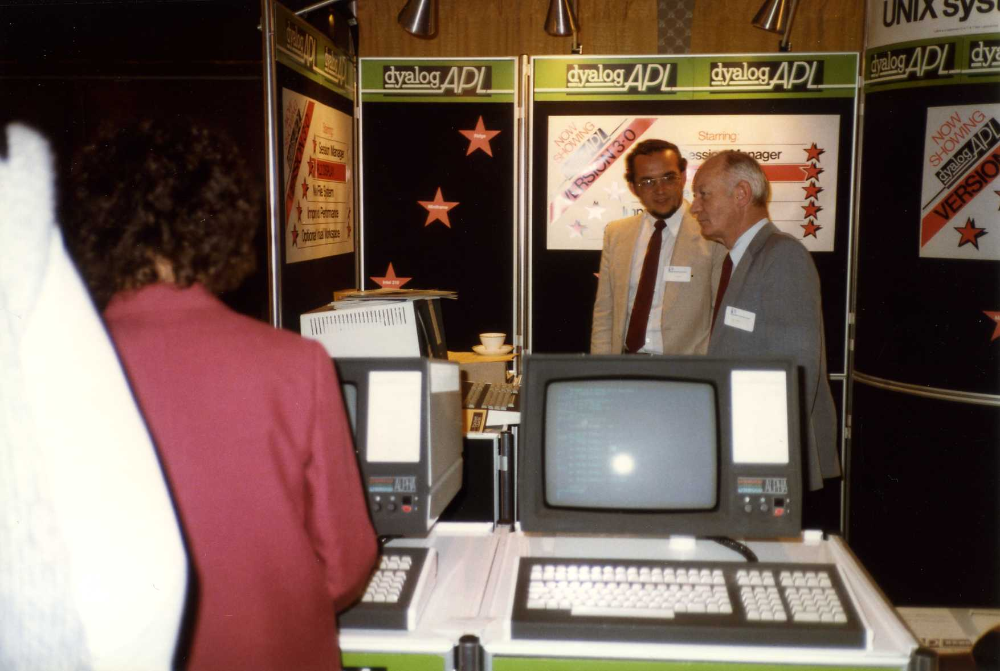
On 26 September 1985 they released Version 3, with performance improvements, a component filing system, rectangular display of nested arrays, a full-screen session manager and virtual workspaces. Here is an extract from the announcement.
RECTANGULAR DISPLAY
Dyalog APL now supports a 'rectangular' display of
nested arrays.
'ABC' (2 2⍴⍳4)
ABC 1 2
3 4
This makes it very easy to produce reports with
row and column headings.
SALES
200 1500 51200
150 1000 4900
225 900 21500
PRODUCTS←'Cakes' 'Biscuits' 'Buns'
DAYS←'Monday' 'Tuesday' 'Wednesday'
DAYS,SALES
Monday 200 1500 51200
Tuesday 150 1000 4900
Wednesday 225 900 21500
(' ',PRODUCTS)⍪DAYS,SALES
Cakes Biscuits Buns
Monday 200 1500 51200
Tuesday 150 1000 4900
Wednesday 225 900 21500
Note, the above expression is equivalent to:
⊃' ' PRODUCTS,.⍪DAYS SALES
Then one of the ports struck oil.
[JS] We did a port to the IBM 6150 RISC machine – which was strange, because IBM had their own APL, but they didn’t have an APL for their new mini-computer. And it seemed easier for them to get us to port ours than for them to port theirs, which is very strange. I suppose that’s big-company politics.
Whenever we made a sale, we had to sell a machine and sell Unix as well. And that’s how Pauline got us into the IBM business, selling APL on IBM RISC machines. Eventually she made a huge business: the APL dropped away and she was flogging a million pounds worth of IBM kit.
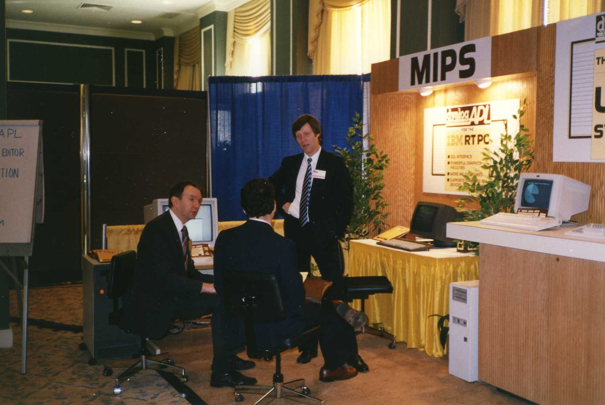
Pete was running that, and it gradually split into the RS/6000 side that Pauline ran and the APL side. I think Lynwood was getting impatient with us, and we reckoned we could buy ourselves out from underneath again.
[PD] We started selling hardware; initially the Altos and then the IBM RT. Lynwood even hired us a full-time hardware salesman, although he left after only a year in which he actually sold nothing.
Soon after our salesman left, British Airways issued an invitation to tender to supply four IBM RTs. As the systems were going to run applications written in Dyalog APL, Dyadic was included in the tender. Consistent with BA’s policy at the time, the winner of the bid would effectively become the sole supplier of IBM Unix systems to BA. However, neither IBM nor BA took the bid particularly seriously, expecting BA to continue to use IBM operating systems and IBM-compatible mainframes, so the tender was comparatively low-key. To everyone’s amazement, including our own, Pauline and I won the contract for Dyadic. At the time only Pauline and I saw the value of this contract, which would go on to generate revenues for Dyadic in excess of £25m before the hardware business was sold in 2002.
In fact, Lynwood had itself been acquired by this time, and it’s questionable whether its new owner, Hunting, shared its ambitions for the Dyadic team.
[PD] At this point (around 1987/8) Lynwood became part of the Hunting Group and Dyadic became a very small minnow in a very large pond. We continued almost unnoticed.
We never made enough money there to pay even one person’s salary, let alone everyone’s, but we made enough money to persuade Lynwood there was something in it.
The CISI thing kept us going 2-3 years, and then SimCorp came along with its application for UK building societies. I met Frede Hansen at a conference. He said, “That’s very interesting. If you’re still here in some years time, we might do business.” He said that to me at the APL84 conference, at the APL85 conference and I think at the APL86 conference. He basically hung around for about four years until he was confident we were still there. I think the fact that we were owned by Lynwood made a big difference, because we had a sizeable company around us.
[Morten Kromberg] I’ve never understood that argument. Actually, the reverse is true.
[PD] Sim-Corp wrote an application for UK building societies, which every single building society then bought. They all seemed to want it on different computers. They were uninterested in how much they paid for it, and we made as much money out of being paid to port it as we did out of selling licences. So, that was the first bit of real business, based on genuine requirements being met by our software. The SimCorp application had no user interface; it ran as a batch job. They just wanted an APL that could do sums.
In 1989, quite out of the blue, Manugistics approached us and indicated an interest in buying the company from Lynwood. I visited Manugustics in Washington and had discussions with Pat Buteaux (head of the APL*PLUS business) and the president, Bill Gibson. Manugistics subsequently made an offer to Lynwood which was initially accepted subject to the approval of the Dyadic staff. I had reported back that although I was impressed by the APL team at Manugistics, I was disappointed to find Bill Gibson seemed uncertain regarding the future of APL. Pauline, John and I said No. (I must admit that I was marginally and wrongly in favour). However, we now knew not only that Lynwood was willing to sell Dyadic but that we could (just!) afford the price. With help from Colin Mathissen at Sheen Stickland, Pauline, John and I put together a business plan, obtained finance from the Royal Bank of Scotland, and bought Dyadic from Lynwood in March 1990.
On the road again¶
Dyadic Systems Ltd was incorporated on 8 May 1990.
[JS] Pete, Pauline and I put our houses on the line and borrowed – a staggering amount of money for us – but in retrospect it wasn’t that much. And actually it was a really stupid decision, because we were putting our houses up as collateral to buy a business that had consistently returned losses. It had never made any money, despite our best effort. We were just draining money. So we became joint partners in this, equal shareholders.
We extricated ourselves from Lynwood, moved out of Alton and set up in Basingstoke. Andy Shiers was a user of Dyalog APL, and he was recruited while we were under Lynwood’s umbrella. He moved with us to the new Dyadic Systems. We rented accommodation [at Riverside View] because we were fairly sure we wouldn’t last a year. We were desperate not to take on any 25-year leases. We thought, we’ll see what happens. If we last twelve months, we’ll be doing well.
[PD] In our first month, we sold a licence to National and Provincial Building Society to run the SimCorp application for £32k; our biggest sale ever, and one that would cover our overheads for three months. I was despatched to New York (hitherto, Lynwood’s cost controls had prevented travelling without a fully-costed justification) and came back with substantial initial orders for Dyalog APL/X on Sun from Morgan Stanley, Merrill Lynch, and Salomon Brothers. These companies had made a substantial commitment to Unix (mainly on Sun workstations) and harboured highly-skilled and important cells of APL developers within their organisations. Coming typically from mainframe based SHARP APL, these developers all took to Dyalog APL/X (and the
⎕SMuser-interface) like ducks to water. I also made personal contact with Security APL who had quietly developed a widely-used financial application on the back of a couple of 8-user licences on an IBM RS/6000.At the same time, we began a co-operation with George Kunzle, a domain expert in financial planning, to convert his FREGI application from the IBM mainframe onto Dyalog APL for the PC, a project that would grow into the hugely successful KPS (Kunzle Planning System) under the direction of Guy Haddleton and Morten Kromberg. (KPS later became the Adaytum Planning System, then Cognos Planning, and, ironically, is now back where it started after the acquisition of Cognos by IBM. Ed.) Guy initially wanted Dyadic to become his ‘software factory’ and I eventually only got him off my back by telling him to “go and talk to Morten”. In a sense, this was one of the least-sensible financial decisions I have ever made, but one that probably saved Dyadic from disaster. It is still a puzzle to me how we managed to make so little money (if any) out of KPS. I imagine Guy laughed all the way to the bank.
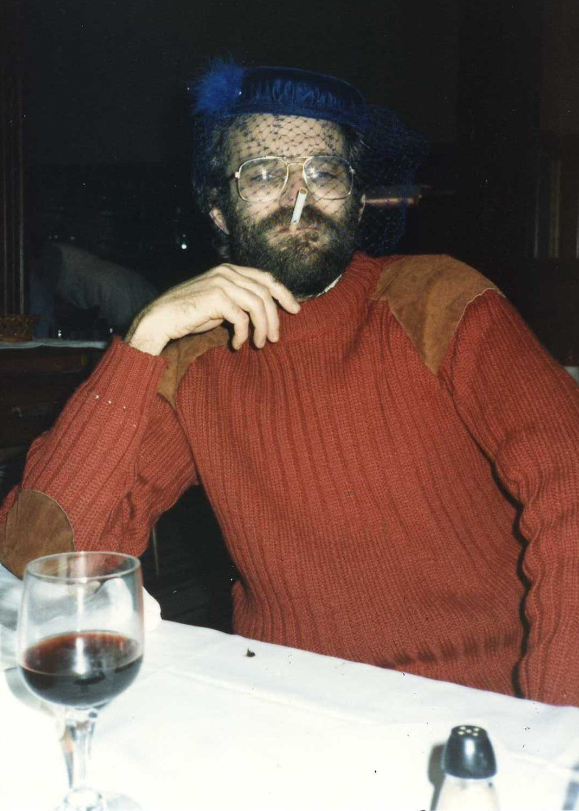
Celebrating in style
[JS] What was keeping the business afloat at that point? Fear, I think. And the APL business. At the time we moved to Basingstoke we were very much an APL shop, and the RISC business was still just a sideline. We had done enough ports on enough machines that we were able to get just enough orders through to pay the salaries. And every time we had a faxed order come through, we’d jump up in the air and wave our hands about.
Otherwise Geoff and I still sat side by side every day, typing, as if nothing had happened.
We bet our houses on a business we didn’t think would last a year. Why would we do that? I don’t know. No, I do know, really. It was – what else do you do? It was a strange decision. Lynwood was going nowhere. From my personal point of view, I’d got a huge psychological investment in this product and it was either take it or leave it. It was like poker: you pitch your money in or you’re out of the game, mate. What poker players call, ‘moving all in’. It was that.
Did we have perhaps a deep-down fundamental belief this was something which was going to create a sustainable business? No, absolutely not. I still am a techie, born and bred. If you slice me through you’ll find techiness there, rather than business. I was intellectually committed. I don’t do reality very well. So an intellectual idea was enough.
And I had been involved, remember, with a series of software projects that had looked great and turned out to fizzle. I had no control over, and to be fair, no interest in, the commercial realities. I was interested in the algorithms, and how you could do fast divide-by-something; and to a certain extent that’s still there. My trust was in: here we are, the guy in the suit’s buying in, so I’m buying in.
So, for me, it was an enterprise driven by passion. Some people give all their money away in the pursuit of something they believe in; it was that sort of a thing, like playing the violin. It was an intellectual passion; I’m not a business man. I’ve had the good fortune to be associated with people who have been business people.
[GS] I’m always an optimist. When we were Dyadic, people would say: if Geoff gets worried, we should have been out years ago! So, no, I don’t worry about such things.
[PD] Meanwhile, Pauline Brand took on the growing role of managing the British Airways hardware contract and of developing new customers which would include BAA, House of Fraser, and other household names. By 1992 she was working full-time on the hardware side and had abandoned nearly all technical links with Dyalog APL. She took with her Andy Shiers, the ultimate ‘black team’ member with an innate ability to crash any software product in ten keystrokes or fewer.
Dyalog’s new face¶
[PD] In 1991 we decided to develop a version of Dyalog APL for Windows and to recruit a new APL programmer. We had the most profound good fortune to find John Daintree, who is simply a genius. John Scholes, Pauline and I can still remember the interview in which he dazzled us by showing us programs that he had written.
At that stage, the hardware business was developing nicely, but the APL side was a bit in the doldrums. The instant John joined us, the company gained a new lease of life. We took the difficult but (as it transpired) wise decision to put our character-based
⎕SMinterface to one side and to replace it with a genuine graphical user interface (⎕WC). Apart from John Daintree, none of us had any significant experience with graphical user interfaces, although as the author of a minority-interest Motif Auxiliary Processor for Dyalog APL, I had a little more than the others. John Scholes was spending part of his time overseeing Graeme Robertson on a major project at Nottingham University, so I found myself working with JD on the⎕WCuser interface. My role was only a minor one, but gave me a great deal of personal satisfaction and pleasure. I wanted our interface to be capable of providing Visual Basic (Mark 1) facilities and I developed WDESIGN in parallel with JD’s work on the interpreter to test both the design and the implementation of the⎕WCinterface. Everything that is wrong with WDESIGN – diverging from the interpreter, needing source-code management, best for static forms – is entirely my fault.
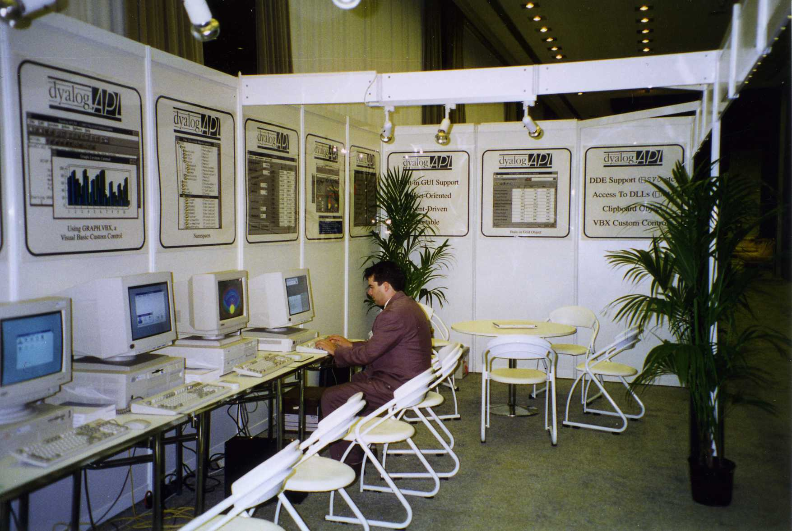
[John Daintree] I joined at about Version 6, in the autumn of 1991. They had this thing called
⎕SMfor screen management, and they wanted a way into the Windows GUI. So the first thing I did was the⎕WCstuff. That was what I ended up doing for the first 14 years of the 18 I’ve been here. And that quickly established me as the GUI-guy, which meant I went on to do session menus, and the various tools that have popped up.Then I turned out to be the Win32 guy, which meant I had to do the OLE stuff.
[PD] In 1992 we invited the representatives from Cocking & Drury to see what we were developing, and I can still remember the look of shock and, I thought, fear in their faces. They knew (but at the time, we didn’t) that we had stolen a huge march on our main competitors, Manugistics.
We announced Dyalog APL for Windows at APL92 in St Petersburg. Our product forum was, without doubt, our most successful ever and later that year Mobil decided to adopt Dyalog APL instead of APL*PLUS for Windows. (Our very first product forum at APL84 in Helsinki had attracted an audience of two, of whom I was one).
Suddenly, Dyalog APL licences were flying out of the door. The only downside being that we could see that our decision to offer a free run-time would mean that licence sales would eventually begin to dry up once every APL*PLUS user had converted to Dyalog.
However, we began to make long-term support contracts with our larger customers. SimCorp decided to use Dyalog APL for Windows as the platform for the SimCorp Dimension product and entered into a royalty agreement with us. Following APL98 in Rome, we negotiated a contract with APL Italiana, who were adopting Dyalog APL for Windows as the platform for their financial-planning application SOFIA. In the United States, CheckFree Corporation, who had purchased the Security APL applications and were taking them to ever-growing markets, entered into a major support contract with Dyadic. These three agreements, along with others, provided the foundations for the long-term financial stability of the Dyalog APL business.
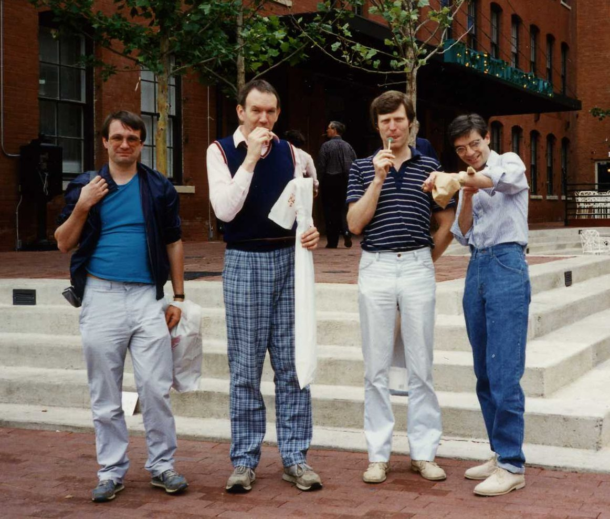
[PD] Meanwhile, Pauline was taking the IBM RS/6000 side to even greater heights and had a substantial and talented team of her own. At one stage, Dyadic was one of the top ten IBM Unix resellers and in the late 1990s our annual turnover reached a staggering £10m. This was great news for the directors and employees, who all shared in the fruits of Pauline’s huge success. However, the scale of the IBM reseller business in comparison with the APL side caused conflicts within the company, and the enterprise as a whole became harder and harder to manage. I found it difficult to do justice to either side of the business, let alone both, and the commercial aspect of the APL business became somewhat neglected. Fortunately, John Scholes never allowed himself to be diverted from the ‘true and enlightened path’ and the technical development continued apace.
The guys were getting a lot of pressure from me to release a new version every year. In those days a new version generated revenue: it was as simple as that. We had brainstorming sessions: what can we put in this to make it interesting. We listened to users to find out what they wanted; but you ask a thousand users, you get a thousand different requests. That was what was driving the development.
I spent a lot of time on the road, seeing customers. I probably went to New York every two months. New customers came from projects to port applications from mainframes to PCs. Our main competition in that came from Manugistics.
But overall we focused on developing the product and the customers looked after themselves. The commercial opportunities in the hardware business meant I didn’t spend much time trying to develop the APL business. And I wasn’t a commercial guy. I wasn’t chosen for the job; I fell into it. John does the honour of saying there’s a bit of a geek in me. I think that’s a bit of an understatement.
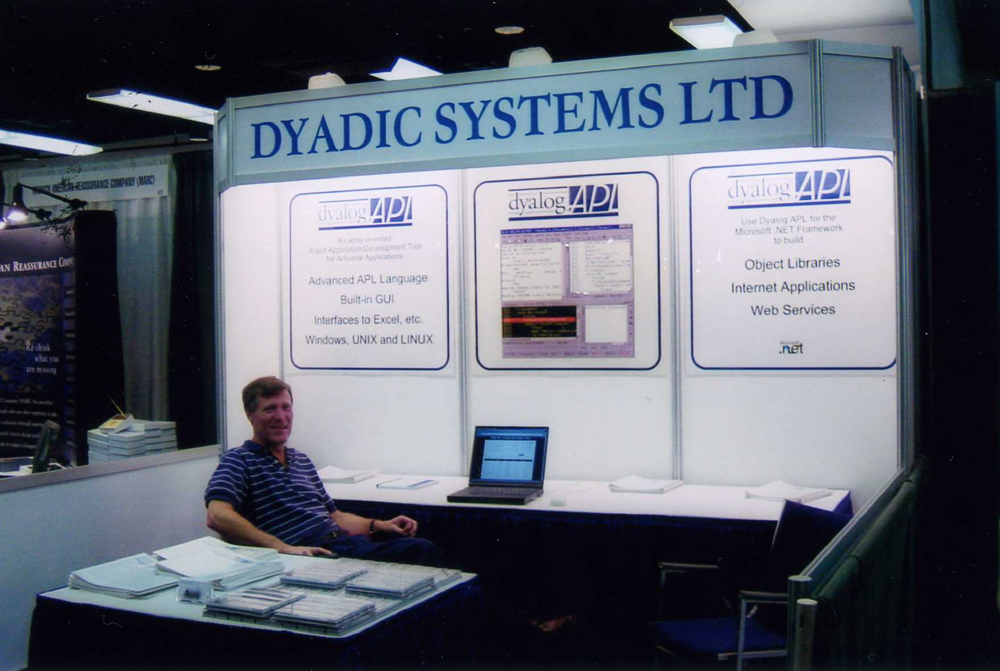
The APL conferences were the focus of our efforts, and APL97 in Toronto was very successful for us. Steve Jaffe of Mobil gave a presentation on why Mobil chose Dyalog and why it was the bee’s knees. I gave a presentation, and someone came up to me afterwards and said, “You’re the most boring speaker I’ve ever heard in my life, but the product’s so good.”
The ducks¶
[PD] With the DOS 386 version, we did an interface to a product called CGI. I had to give a presentation to the British APL Association. I knew nothing whatsoever about graphics, so I bought a book on the GKS graphical kernel system. Page one had the coordinates for a duck, so all I did was copy them and use them for a presentation featuring a duck. I then used that ad nauseam: for example, to demonstrate OLE and multi-threading. And we reached a point where people were complaining if there were no ducks.
Karen or Briony decided to adopt a duck at the Wildfowl Trust, and we got a letter from it. It became a running joke, not that funny, but familiar. And then we gave out little blue rubber ducks at a conference.
Sixty four bits¶
[GS] Back in 1993 we got a DEC Alpha, a new 64-bit Unix box and we did a hack port to it. We went through the code and replaced all the unsigneds by long unsigneds, and things like that: grepped our way through and hacked it, and produced quite a nice 64-bit APL. And that languished, because we couldn’t bring the code back into the main stream. And there are still people using it. Apparently there’s a mobile-phone database in Holland that’s been running on that APL since 1993.
Just a couple of years ago, just before Morten took over, I said, I’m fed up with never doing another 64-bit port, and I went out and bought a second-hand Sun UltraSPARC, a 64-bit Unix box. I sent an email round the company that said, “I’ve bought this box! I don’t know how I’m going to manage the time, but I’m going to do the port.” At which point Pete rang around the customers and asked if they were interested in a 64-bit version. He got about sixty grand of finance, but for the Windows 64-bit version, so the company then went out and bought a Windows 64-bit box and we did the Windows 64-bit version fairly quickly. And the two hundred quid I’d spent buying the Sun got me and Daintree a large bonus that year. One of the best £200 investments I’ve ever made.
Parting company¶
[JS] Now the IBM business grew and became very successful. My take on this was that by then the APL side was a steady business, and it was bringing in steady income, and you could actually draw graphs and predict it. And the IBM business was all or nothing. One week Pauline would sell a million quids’ worth of kit, and then the next week British Airways would say, oops, they’ve put the price of air fuel up tuppence; cancel all projects. So the way it seemed to work from my point of view was that the APL business was insurance: it paid the rent, it paid the salaries. And then the IBM business was the cherry on the cake, which was great. But it grew and grew and grew until it was a lot of cherry coming in. The APL business had become a distraction from the main business of Dyadic Systems Ltd, which was selling high-priced IBM kit.
The geeks amongst us, what we all really wanted to do was to ignore all this and carry on typing. If you’re not a geek, you won’t understand this, that you’ll sit and type and wrestle with an idea while the building’s on fire.
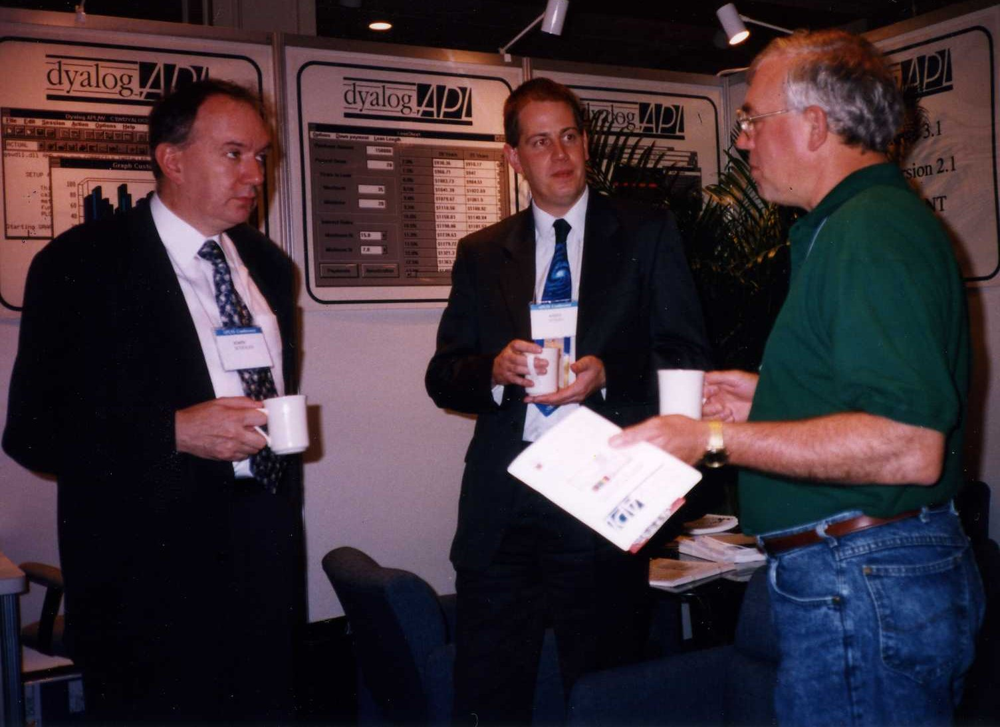
[JS] It didn’t seem possible in the long run to reconcile these two business ideas. One of the conflicts was Pete’s time. Commercially Pete should have been going where the money was. He was the business guy. So his head was in the IBM side of the business, but his heart was with APL. He’d brought it up, it was his baby. There’s a bit of geekiness in Pete. And there was conflict about that. It was always, why don’t we ditch APL, because it’s just using all these resources? And if you compared the number of people involved to the profit it was making, at some point in the game, it was not a good thing.
Effectively, the company split into two divisions, just naturally: Pauline’s side and Pete’s side. That’s the way people perceived it. And Pauline went on to greater and greater things, and employed people we didn’t really know. So it effectively became two businesses.
Then, at some point, it became appropriate to separate those. We were all getting long in the tooth and we wanted out. I think that’s it. We were deciding what an exit strategy would be. We had this huge two- cylinder beast, and we didn’t know how to ride it. We couldn’t see ourselves doing it when we were seventy years old. But it was unsaleable as it was, because no one could understand what the business was. So the only way to do it was to split it formally and try and sell the two bits.
That was quite painful emotionally: a lot of grief and tears. So we procrastinated a lot, but eventually we decided we wanted to do that. And of course, when you sell the business, they take hostages. So when we sold the IBM side they wanted Pauline signed up. I mean, without her, there was no business. She did everything; she was the force.
[GS] IBM came along and said, you’re too small for us. You’ve got to merge with somebody else. And it broke Pauline’s heart.
[JS] There was a bit of a competition: who wants the name? We both wanted it, but the money won out. Pauline’s customers were big corporate entities and they didn’t like their suppliers changing names. Commercially it would have done her more damage to change names than us. Plus, people never did understand the difference between “Dyadic” and “Dyalog” anyway. They were confused about it.
So we split the business and the IBM side was Dyadic Systems Ltd, and the APL side was Dyalog Ltd. And then we sold Dyadic Systems Ltd to Syan.
[PD] In 2002, the IBM re-seller business became even more cut-throat. Dyadic had always offered a really high-quality service and always scored very highly in IBM’s customer surveys. As margins were squeezed , it became increasingly difficult to maintain this level of service. Also, John and I were growing old and (speaking for myself) tired. I in particular lacked the will to continue indefinitely. To secure the long-term security of all our employees, we decided to sell Dyadic Systems Limited (the IBM reseller business) to Syan and to transfer the APL business to a new company called Dyalog Limited.
Dyalog Ltd was incorporated on 23 Jan 2003. The business had been making them a comfortable living for a while, and they had long ago repaid the loans on their houses. But they had never separated the APL income from the IBM machine income. It all went into the same pot. They didn’t know whether the APL business was making money or losing it.
[JS] So again, for a second time, we had no idea whether the APL business would sustain us. After we’d separated the companies the APL business was on its own and we didn’t really know whether it would survive. We thought it was making enough money to stay alive. But again we went into a sort of defensive position of short-term rental of offices, the smallest office we could get, just in case we suddenly went belly-up.
And then it became apparent that APL was OK, it was making steady money. So I think in retrospect, all the time we had been in Basingstoke, the APL had been providing a steady income, but we had never been able to tell. And the machine sales were providing the bonuses and the cream.
[PD] We had a lot of arguments over whether APL was making money, because at this stage it was impossible to tell. I had always been of the view that it was profitable, although marginal. John didn’t know. Pauline was of the opposite opinion and our accountant shared her view. It wasn’t until after we split and moved to Basingstoke that I could show that we were actually doing rather well. The hardware business had huge overheads that dwarfed the APL business: we just couldn’t see the woods for the trees.
[GS] When the company split, I stopped wearing a suit to work. When we were IBM resellers I had to wear a suit to work. It didn’t have to be blue, but it had to be dark or grey – we had a dress code. When we became Dyalog, we became scruffy.
The coming of the consortium¶
[JS] The next big move was when the consortium came together. That was negotiated at the conference in Florida. I think what happened was that Pete and I were looking for an exit strategy. I certainly didn’t have the energy to put out, for example, a big Version 12 Unicode release.
[PD] To allow the three of us to retire gracefully, we agreed to try to find a new management team to take over Dyalog from John and myself.
[JS] But again, being geeks… Perhaps, what we should have done, what a businessman, what a mafioso would have done, is to hold our customers up to ransom and say, we’re out. Give us a million quid or your API ain’t gonna work anymore. We did not do that. Partly, I suppose, because we were frightened; we were playing with the big boys. And partly, because we had – again, if you’re not a geek you won’t understand this – a life’s work in a product that we had an emotional and psychological commitment to.
What we thought was, if we sold it to one large customer, they would butcher it. We saw that happen with another APL. They sold it to one of their customers. And the users would come along saying we want this, that or the other primitive function that will do something for their business; never mind if it suits the language or not. So what we decided to do was, we’d try to sell it to a consortium of our users that would have the interest of the product and the language as a whole, as an independent entity. That was a clear decision. We could have blackmailed everybody and run off like bandits. But we chose not to do that.
One of the obvious possibilities, that we rejected, was to sell it to the people working in the company. But we were now so few, we could see the technical but not the business skills to carry the company into the future. Which was a shame, if there had been another buyer from within, if it had been a bigger company, that might have been better. But it wasn’t a possibility.
So we looked around. Among the people we know at the APL conferences, who do we think could make a go of managing this? We thought of that first. And we thought of Gitte and Morten. And I’m not sure now whether we thought of the consortium, or they thought of the consortium.
[PD] In 2005, I was delighted to hand over the reins to Morten and Gitte, backed by SimCorp and APL Italiana. I am even more pleased and proud to see that the company has gone from strength to strength in my absence.